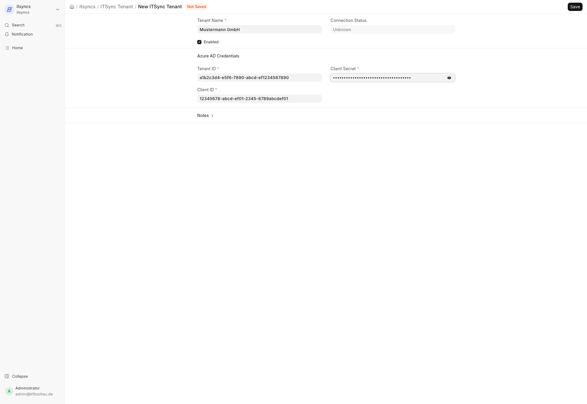
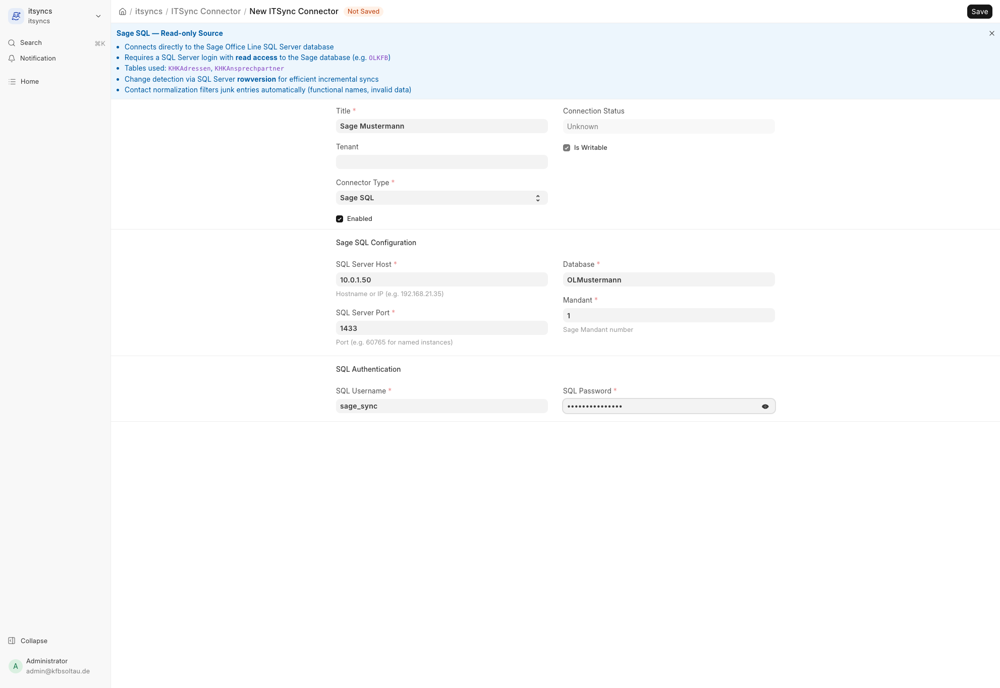
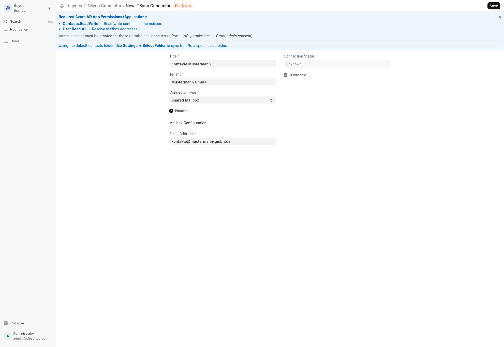
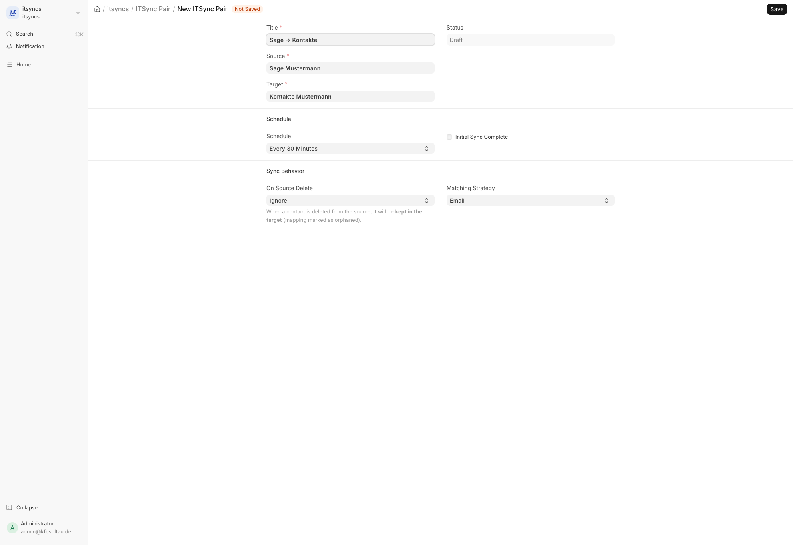
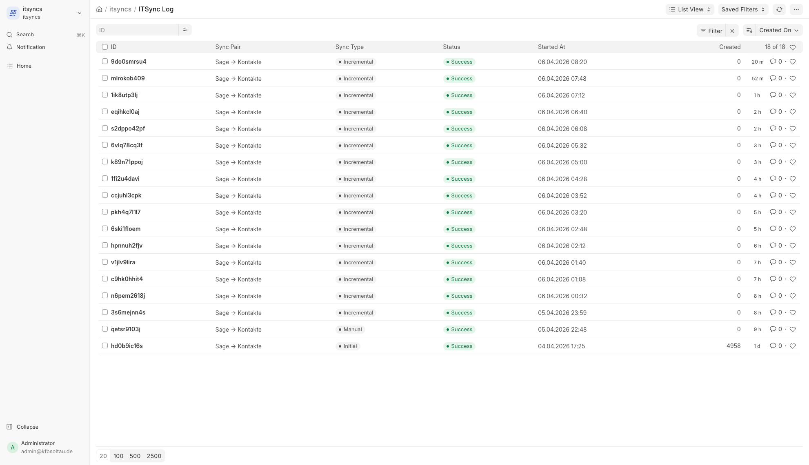

ITSync Setup Guide
Sage Office Line SQL → Exchange Shared Mailbox Kontakt-Sync
Voraussetzungen
Azure AD / Entra ID
- App Registration mit Application Permissions:
Contacts.ReadWriteUser.Read.All
- Admin Consent erteilt
- Client Secret erstellt
Sage SQL Server
- SQL Server per Netzwerk erreichbar
- SQL Login mit Lesezugriff
- Tabellen:
KHKAdressen,KHKAnsprechpartner
Exchange / Microsoft 365
- Shared Mailbox als Sync-Ziel
- Im selben M365 Tenant
1 ITSync Tenant anlegen
Der Tenant speichert die Azure AD Zugangsdaten und wird von allen Exchange-Connectoren verwendet.
Navigation: itsyncs → ITSync Tenant → Neu
| Feld | Beschreibung |
|---|---|
| Tenant Name | Frei wählbarer Name (z.B. Firmenname) |
| Tenant ID | Verzeichnis-ID (Mandant) aus der Azure App Registration |
| Client ID | Anwendungs-ID (Client) aus der Azure App Registration |
| Client Secret | Das erstellte Geheimnis (wird verschlüsselt gespeichert) |

2 Sage SQL Connector anlegen (Quelle)
Der Sage SQL Connector verbindet sich direkt mit der SQL Server Datenbank und liest Adressen und Ansprechpartner aus.
Navigation: itsyncs → ITSync Connector → Neu
| Feld | Beschreibung |
|---|---|
| Title | Frei wählbarer Name (z.B. "Sage Produktion") |
| Connector Type | Sage SQL auswählen |
| Tenant | Leer lassen — Sage SQL benötigt keinen Azure Tenant |
| SQL Server Host | IP-Adresse oder Hostname des SQL Servers |
| SQL Server Port | Port der SQL Server Instanz (Standard: 1433, bei Named Instances oft ein anderer Port) |
| Database | Name der Sage-Datenbank |
| Mandant | Sage Mandantennummer (üblicherweise 1) |
| SQL Username | SQL Server Login |
| SQL Password | Passwort (wird verschlüsselt gespeichert) |

Die Hilfe-Sektion oben im Formular zeigt kontextbezogene Informationen je nach gewähltem Connector-Typ:

3 Exchange Connector anlegen (Ziel)
Der Exchange Connector definiert die Shared Mailbox, in die die Kontakte synchronisiert werden.
Navigation: itsyncs → ITSync Connector → Neu
| Feld | Beschreibung |
|---|---|
| Title | Frei wählbarer Name (z.B. "Kontakte Shared Mailbox") |
| Connector Type | Shared Mailbox auswählen |
| Tenant | Den in Schritt 1 erstellten Tenant auswählen |
| Email Address | E-Mail-Adresse der Shared Mailbox |

4 Sync Pair erstellen
Das Sync Pair verbindet Quelle (Sage) mit Ziel (Exchange) und steuert den Sync-Prozess.
Navigation: itsyncs → ITSync Pair → Neu
| Feld | Beschreibung |
|---|---|
| Title | Frei wählbarer Name (z.B. "Sage → Kontakte") |
| Source | Den Sage SQL Connector aus Schritt 2 auswählen |
| Target | Den Exchange Connector aus Schritt 3 auswählen |
| Schedule | Intervall für automatische Syncs (z.B. "Every 30 Minutes") |
| On Source Delete | Ignore = deaktivierte Kontakte bleiben im Ziel Delete = werden auch im Ziel entfernt |
| Matching Strategy | Email für Standard-Matching beim Initial Sync |

5 Preview generieren & Initial Sync
Preview
- Sync Pair öffnen
- Actions → Generate Preview klicken
- Die Sektion Sync Preview zeigt die Anzahl der zu erstellenden Kontakte
Initial Sync
- Actions → Run Initial Sync klicken und bestätigen
- Der Sync läuft im Hintergrund (je nach Kontaktanzahl einige Minuten)
- Status wechselt zu "Running" und nach Abschluss zu "Idle"
Auto-Sync aktivieren
- Auto Sync Enabled aktivieren und speichern
- Der Scheduler führt automatisch inkrementelle Syncs durch
- Nur geänderte Kontakte werden aktualisiert (via SQL Server rowversion)
6 Sync Logs prüfen
Jeder Sync erzeugt einen Log-Eintrag mit Status und Zählern.
Navigation: itsyncs → ITSync Log
| Spalte | Beschreibung |
|---|---|
| Sync Type | Initial / Incremental / Manual |
| Status | Success / Partial / Failed |
| Created | Neu angelegte Kontakte |
| Updated | Aktualisierte Kontakte |
| Deleted | Gelöschte Kontakte |
| Errors | Fehler (Details im Log-Dokument) |

Kontakt-Normalisierung
Der Sage SQL Connector bereinigt die Kontaktdaten automatisch beim Import:
| Was | Wie |
|---|---|
| Telefonnummern | Alle Formate → +49 E.164 (z.B. (05146) 987269 → +495146987269) |
| E-Mail-Adressen | Leerzeichen, (at), kaputte TLDs werden automatisch korrigiert |
| Funktions-Kontakte | "Rechnungen", "INFO", "AVIS", "Mahnungen" etc. werden gefiltert |
| Namenlose Kontakte | Einträge ohne Vor-/Nachname werden übersprungen |
| Auftragsnummern | Nachnamen die mit Ziffern beginnen werden als Referenz erkannt und gefiltert |
| PLZ | Nachgestellte Leerzeichen werden entfernt |
| Homepage | https:// wird ergänzt wenn fehlt |
| Sonderzeichen | Führende Sonderzeichen in Namen werden entfernt |
Fehlerbehebung
| Problem | Lösung |
|---|---|
| Tenant-Test schlägt fehl | Azure App Permissions prüfen, Admin Consent erteilen |
| SQL Server nicht erreichbar | Firewall-Regeln prüfen, Port korrekt? |
| 0 Kontakte gefunden | Mandant-Nummer korrekt? Aktive Adressen vorhanden (Aktiv = -1)? |
| Sync bleibt auf "Running" | Worker-Prozesse prüfen: sudo supervisorctl status |
| Auto-Sync läuft nicht | Auto Sync Enabled? Initial Sync abgeschlossen? Scheduler aktiv? |
| Kontakte nicht aktualisiert | Schedule-Intervall abgelaufen? ITSync Log auf Fehler prüfen |